Note
Making Maps of Your Model
This notebook demonstrates the mapping capabilities of FloPy. It demonstrates these capabilities by loading and running existing models and then showing how the PlotMapView object and its methods can be used to make nice plots of the model grid, boundary conditions, model results, shape files, etc.
Mapping is demonstrated for MODFLOW-2005, MODFLOW-USG, and MODFLOW-6 models in this notebook
[1]:
import sys
import os
import numpy as np
import matplotlib as mpl
import matplotlib.pyplot as plt
import shapefile
from tempfile import TemporaryDirectory
sys.path.append(os.path.join("..", "common"))
import notebook_utils
# run installed version of flopy or add local path
try:
import flopy
except:
fpth = os.path.abspath(os.path.join("..", ".."))
sys.path.append(fpth)
import flopy
print(sys.version)
print("numpy version: {}".format(np.__version__))
print("matplotlib version: {}".format(mpl.__version__))
print("flopy version: {}".format(flopy.__version__))
3.10.10 | packaged by conda-forge | (main, Mar 24 2023, 20:08:06) [GCC 11.3.0]
numpy version: 1.24.3
matplotlib version: 3.7.1
flopy version: 3.3.7
[2]:
# Set name of MODFLOW exe
# assumes executable is in users path statement
v2005 = "mf2005"
exe_name_2005 = "mf2005"
vmf6 = "mf6"
exe_name_mf6 = "mf6"
exe_mp = "mp6"
# Set the paths
prj_root = notebook_utils.get_project_root_path()
loadpth = str(prj_root / "examples" / "data" / "freyberg")
tempdir = TemporaryDirectory()
modelpth = tempdir.name
Load and Run an Existing MODFLOW-2005 Model
A model called the “Freyberg Model” is located in the loadpth folder. In the following code block, we load that model, then change into a new workspace (modelpth) where we recreate and run the model. For this to work properly, the MODFLOW-2005 executable (mf2005) must be in the path. We verify that it worked correctly by checking for the presence of freyberg.hds and freyberg.cbc.
[3]:
ml = flopy.modflow.Modflow.load(
"freyberg.nam", model_ws=loadpth, exe_name=exe_name_2005, version=v2005
)
ml.change_model_ws(new_pth=modelpth)
ml.write_input()
success, buff = ml.run_model(silent=True, report=True)
if success:
for line in buff:
print(line)
else:
raise ValueError("Failed to run.")
files = ["freyberg.hds", "freyberg.cbc"]
for f in files:
if os.path.isfile(os.path.join(modelpth, f)):
msg = "Output file located: {}".format(f)
print(msg)
else:
errmsg = "Error. Output file cannot be found: {}".format(f)
print(errmsg)
MODFLOW-2005
U.S. GEOLOGICAL SURVEY MODULAR FINITE-DIFFERENCE GROUND-WATER FLOW MODEL
Version 1.12.00 2/3/2017
Using NAME file: freyberg.nam
Run start date and time (yyyy/mm/dd hh:mm:ss): 2023/05/04 15:53:53
Solving: Stress period: 1 Time step: 1 Ground-Water Flow Eqn.
Run end date and time (yyyy/mm/dd hh:mm:ss): 2023/05/04 15:53:53
Elapsed run time: 0.009 Seconds
Normal termination of simulation
Output file located: freyberg.hds
Output file located: freyberg.cbc
Create and Run MODPATH 6 model
The MODFLOW-2005 model created in the previous code block will be used to create a endpoint capture zone and pathline analysis for the pumping wells in the model.
[4]:
mp = flopy.modpath.Modpath6(
"freybergmp", exe_name=exe_mp, modflowmodel=ml, model_ws=modelpth
)
mpbas = flopy.modpath.Modpath6Bas(
mp,
hnoflo=ml.bas6.hnoflo,
hdry=ml.lpf.hdry,
ibound=ml.bas6.ibound.array,
prsity=0.2,
prsityCB=0.2,
)
sim = mp.create_mpsim(trackdir="forward", simtype="endpoint", packages="RCH")
mp.write_input()
success, buff = mp.run_model(silent=True, report=True)
if success:
for line in buff:
print(line)
else:
raise ValueError("Failed to run.")
mpp = flopy.modpath.Modpath6(
"freybergmpp", exe_name=exe_mp, modflowmodel=ml, model_ws=modelpth
)
mpbas = flopy.modpath.Modpath6Bas(
mpp,
hnoflo=ml.bas6.hnoflo,
hdry=ml.lpf.hdry,
ibound=ml.bas6.ibound.array,
prsity=0.2,
prsityCB=0.2,
)
sim = mpp.create_mpsim(trackdir="backward", simtype="pathline", packages="WEL")
mpp.write_input()
mpp.run_model()
Processing basic data ...
Checking head file ...
Checking budget file and building index ...
Run particle tracking simulation ...
Processing Time Step 1 Period 1. Time = 1.00000E+01
Particle tracking complete. Writing endpoint file ...
End of MODPATH simulation. Normal termination.
FloPy is using the following executable to run the model: ../../home/runner/.local/bin/modflow/mp6
Processing basic data ...
Checking head file ...
Checking budget file and building index ...
Run particle tracking simulation ...
Processing Time Step 1 Period 1. Time = 1.00000E+01
Particle tracking complete. Writing endpoint file ...
End of MODPATH simulation. Normal termination.
[4]:
(True, [])
Creating a Map of the Model Grid
Now that we have a model, we can use the flopy plotting utilities to make maps. We will start by making a map of the model grid using the PlotMapView class and the plot_grid() method of that class.
[5]:
# First step is to set up the plot
fig = plt.figure(figsize=(8, 8))
ax = fig.add_subplot(1, 1, 1, aspect="equal")
# Next we create an instance of the PlotMapView class
mapview = flopy.plot.PlotMapView(model=ml)
# Then we can use the plot_grid() method to draw the grid
# The return value for this function is a matplotlib LineCollection object,
# which could be manipulated (or used) later if necessary.
linecollection = mapview.plot_grid()
t = ax.set_title("Model Grid")
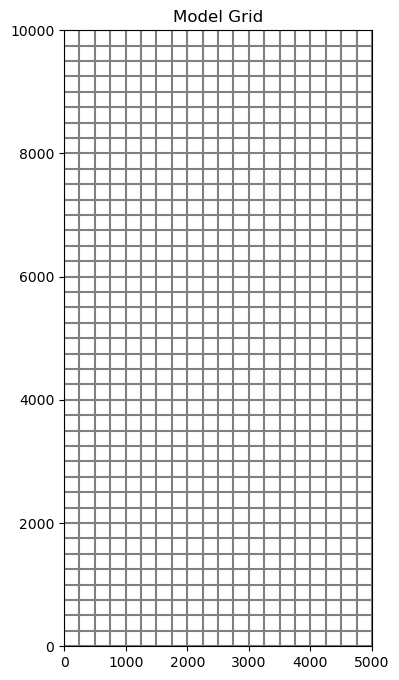
Grid transformations and setting coordinate information
The PlotMapView class can plot the position of the model grid in space. However, transformations must be done on the modelgrid using set_coord_info(). This allows the user to set the coordinate information once, and then they are able to generate as many instanstances of PlotMapView as they wish, without providing the coordinate info again.
Here we demonstrate the effects of these values. In the first two plots, the grid origin (lower left corner) remains fixed at (0, 0). These first two plots demostrate how work with coordinate info in the PlotMapView class. The third example shows the grid origin set at (507000 E, 2927000 N)
[6]:
fig = plt.figure(figsize=(18, 6))
ax = fig.add_subplot(1, 3, 1, aspect="equal")
# set modelgrid rotation
ml.modelgrid.set_coord_info(angrot=14)
# generate a plot
mapview = flopy.plot.PlotMapView(model=ml)
linecollection = mapview.plot_grid()
t = ax.set_title("rotation=14 degrees")
# re-set the modelgrid rotation
ml.modelgrid.set_coord_info(angrot=-20)
ax = fig.add_subplot(1, 3, 2, aspect="equal")
mapview = flopy.plot.PlotMapView(model=ml)
linecollection = mapview.plot_grid()
t = ax.set_title("rotation=-20 degrees")
# re-set the modelgrid origin and rotation
ml.modelgrid.set_coord_info(xoff=507000, yoff=2927000, angrot=45)
ax = fig.add_subplot(1, 3, 3, aspect="equal")
mapview = flopy.plot.PlotMapView(model=ml)
linecollection = mapview.plot_grid()
t = ax.set_title("xoffset, yoffset, and rotation")
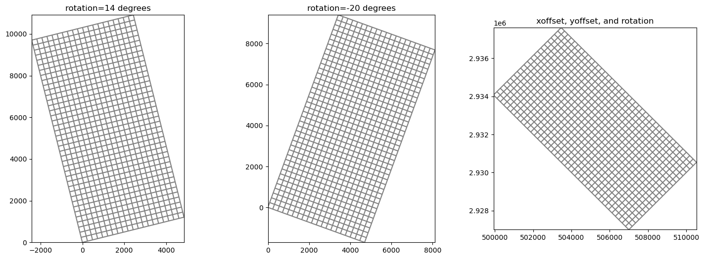
Ploting Ibound
The plot_ibound() method can be used to plot the boundary conditions contained in the ibound arrray, which is part of the MODFLOW Basic Package. The plot_ibound() method returns a matplotlib QuadMesh object (matplotlib.collections.QuadMesh). If you are familiar with the matplotlib collections, then this may be important to you, but if not, then don’t worry about the return objects of these plotting function.
[7]:
fig = plt.figure(figsize=(8, 8))
ax = fig.add_subplot(1, 1, 1, aspect="equal")
# set the grid rotation and then plot
ml.modelgrid.set_coord_info(angrot=-14)
mapview = flopy.plot.PlotMapView(model=ml)
quadmesh = mapview.plot_ibound()
linecollection = mapview.plot_grid()
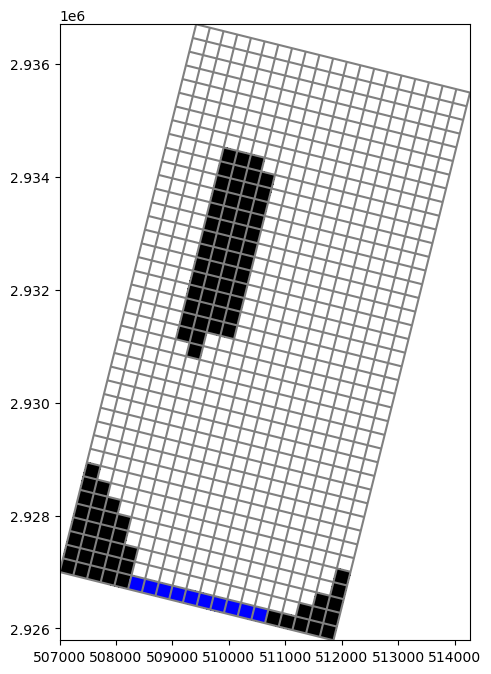
We can also change the colors by calling the color_noflow and color_ch parameters in plot_ibound() and the colors parameter in plot_grid()
[8]:
fig = plt.figure(figsize=(8, 8))
ax = fig.add_subplot(1, 1, 1, aspect="equal")
mapview = flopy.plot.PlotMapView(model=ml)
quadmesh = mapview.plot_ibound(color_noflow="red", color_ch="orange")
linecollection = mapview.plot_grid(colors="yellow")
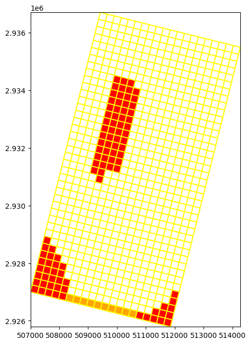
Plotting Boundary Conditions
The plot_bc() method can be used to plot boundary conditions. It is setup to use the following dictionary to assign colors, however, these colors can be changed in the method call.
bc_color_dict = {'default': 'black', 'WEL': 'red', 'DRN': 'yellow',
'RIV': 'green', 'GHB': 'cyan', 'CHD': 'navy'}
Here, we plot the location of river cells and the location of well cells.
[9]:
fig = plt.figure(figsize=(8, 8))
ax = fig.add_subplot(1, 1, 1, aspect="equal")
mapview = flopy.plot.PlotMapView(model=ml)
quadmesh = mapview.plot_ibound()
quadmesh = mapview.plot_bc("RIV")
quadmesh = mapview.plot_bc("WEL")
linecollection = mapview.plot_grid()
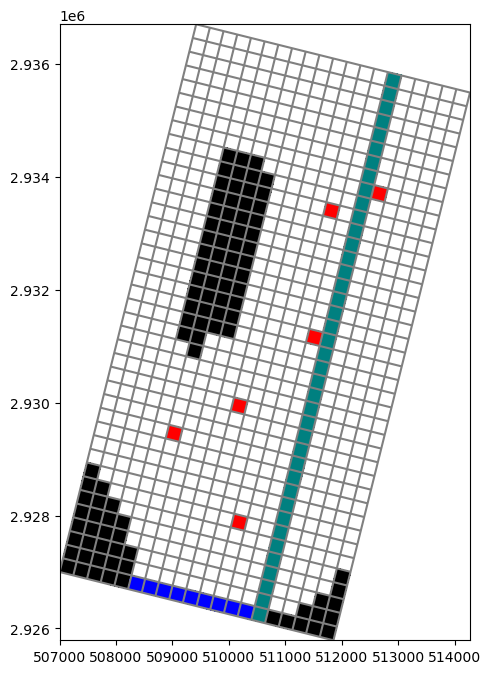
The colors can be changed by using the color_noflow and color_ch parameters in plot_ibound(), the color parameter in plot_bc(), and the colors parameter in plot_grid()
[10]:
fig = plt.figure(figsize=(8, 8))
ax = fig.add_subplot(1, 1, 1, aspect="equal")
mapview = flopy.plot.PlotMapView(model=ml)
quadmesh = mapview.plot_ibound(color_noflow="red", color_ch="orange")
quadmesh = mapview.plot_bc("RIV", color="purple")
quadmesh = mapview.plot_bc("WEL", color="navy")
linecollection = mapview.plot_grid(colors="yellow")
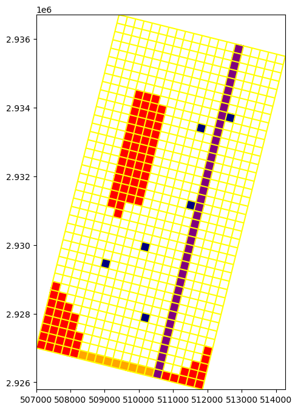
Plotting an Array
PlotMapView has a plot_array() method. The plot_array() method will accept either a 2D or 3D array. If a 3D array is passed, then the layer parameter for the PlotMapView object will be used (note that the PlotMapView object can be created with a layer= argument).
[11]:
# Create a random array and plot it
a = np.random.random((ml.dis.nrow, ml.dis.ncol))
fig = plt.figure(figsize=(8, 8))
ax = fig.add_subplot(1, 1, 1, aspect="equal")
ax.set_title("Random Array")
mapview = flopy.plot.PlotMapView(model=ml, layer=0)
quadmesh = mapview.plot_array(a)
linecollection = mapview.plot_grid()
cb = plt.colorbar(quadmesh, shrink=0.5)
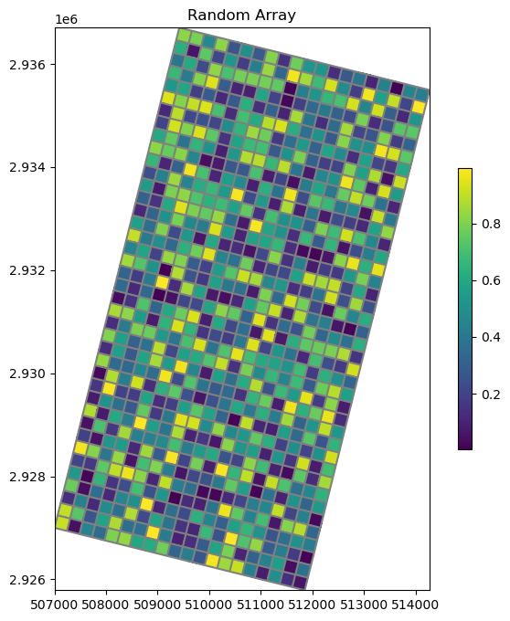
[12]:
# Plot the model bottom array
a = ml.dis.botm.array
fig = plt.figure(figsize=(8, 8))
ax = fig.add_subplot(1, 1, 1, aspect="equal")
ax.set_title("Model Bottom Elevations")
mapview = flopy.plot.PlotMapView(model=ml, layer=0)
quadmesh = mapview.plot_array(a)
linecollection = mapview.plot_grid()
cb = plt.colorbar(quadmesh, shrink=0.5)
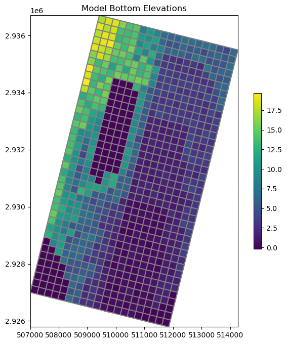
Contouring an Array
PlotMapView also has a contour_array() method. It also takes a 2D or 3D array and will contour the layer slice if 3D.
[13]:
# Contour the model bottom array
a = ml.dis.botm.array
fig = plt.figure(figsize=(8, 8))
ax = fig.add_subplot(1, 1, 1, aspect="equal")
ax.set_title("Model Bottom Elevations")
mapview = flopy.plot.PlotMapView(model=ml, layer=0)
contour_set = mapview.contour_array(a)
linecollection = mapview.plot_grid()
plt.colorbar(contour_set, shrink=0.75);
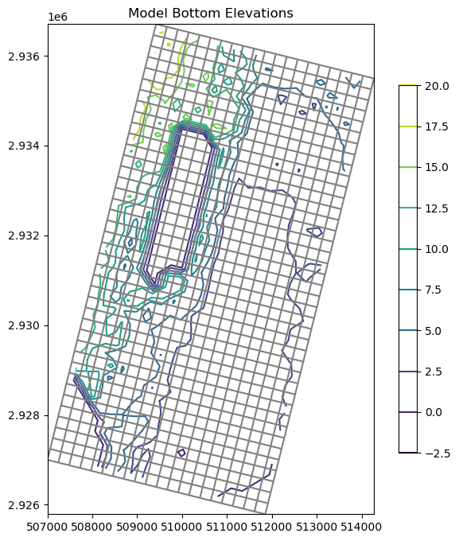
[14]:
# The contour_array() method will take any keywords
# that can be used by the matplotlib.pyplot.contour
# function. So we can pass in levels, for example.
a = ml.dis.botm.array
levels = np.arange(0, 20, 0.5)
fig = plt.figure(figsize=(8, 8))
ax = fig.add_subplot(1, 1, 1, aspect="equal")
ax.set_title("Model Bottom Elevations")
mapview = flopy.plot.PlotMapView(model=ml, layer=0)
contour_set = mapview.contour_array(a, levels=levels)
linecollection = mapview.plot_grid()
# set up and plot a continuous colorbar in matplotlib for a contour plot
norm = mpl.colors.Normalize(
vmin=contour_set.cvalues.min(), vmax=contour_set.cvalues.max()
)
sm = plt.cm.ScalarMappable(norm=norm, cmap=contour_set.cmap)
sm.set_array([])
fig.colorbar(sm, shrink=0.75, ax=ax);
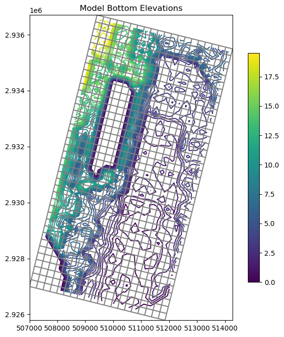
Array contours can be exported directly to a shapefile.
[15]:
from flopy.export.utils import (
export_contours,
) # use export_contourf for filled contours
from shapefile import Reader
shp_path = os.path.join(modelpth, "contours.shp")
export_contours(shp_path, contour_set)
with Reader(shp_path) as r:
nshapes = len(r.shapes())
print("Contours:", nshapes)
No CRS information for writing a .prj file.
Supply an valid coordinate system reference to the attached modelgrid object or .export() method.
wrote ../../../home/runner/work/flopy/flopy/.docs/Notebooks
Contours: 360
Plotting Heads
So this means that we can easily plot results from the simulation by extracting heads using flopy.utils.HeadFile. Here we plot the simulated heads.
[16]:
fname = os.path.join(modelpth, "freyberg.hds")
hdobj = flopy.utils.HeadFile(fname)
head = hdobj.get_data()
levels = np.arange(10, 30, 0.5)
fig = plt.figure(figsize=(15, 10))
ax = fig.add_subplot(1, 2, 1, aspect="equal")
ax.set_title("plot_array()")
mapview = flopy.plot.PlotMapView(model=ml)
quadmesh = mapview.plot_ibound()
quadmesh = mapview.plot_array(head, alpha=0.5)
mapview.plot_bc("WEL")
linecollection = mapview.plot_grid()
ax = fig.add_subplot(1, 2, 2, aspect="equal")
ax.set_title("contour_array()")
mapview = flopy.plot.PlotMapView(model=ml)
quadmesh = mapview.plot_ibound()
mapview.plot_bc("WEL")
contour_set = mapview.contour_array(head, levels=levels)
linecollection = mapview.plot_grid();
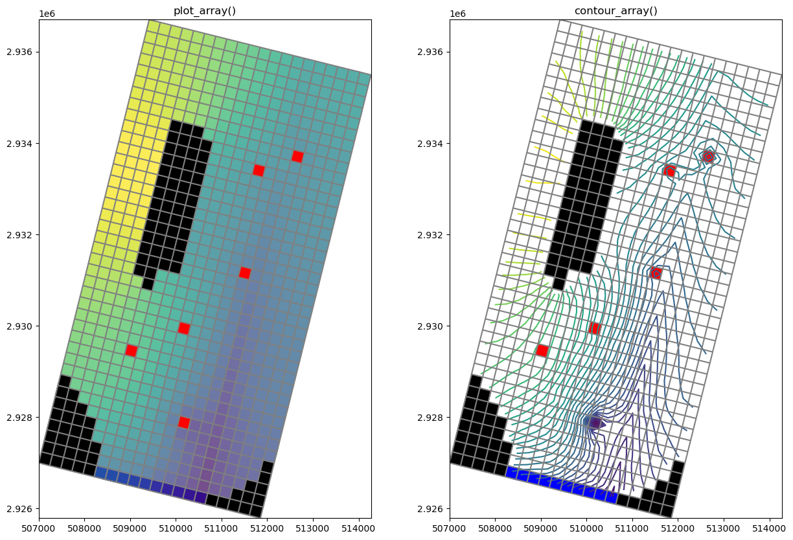
Plotting Discharge Vectors
PlotMapView has a plot_vector() method, which takes vector components in the x- and y-directions at the cell centers. The x- and y-vector components are calculated from the 'FLOW RIGHT FACE' and 'FLOW FRONT FACE' arrays, which can be written by MODFLOW to the cell by cell budget file. These array can be extracted from the cell by cell flow file using the flopy.utils.CellBudgetFile object as shown below. Once they are extracted, they can be passed to the
postprocessing.get_specific_discharge() method to get the discharge vectors and plotted using the plot_vector() method.
Note: postprocessing.get_specific_discharge() also takes the head array as an optional argument. The head array is used to convert the volumetric discharge in dimensions of \(L^3/T\) to specific discharge in dimensions of \(L/T\).
[17]:
fname = os.path.join(modelpth, "freyberg.cbc")
cbb = flopy.utils.CellBudgetFile(fname)
head = hdobj.get_data()
frf = cbb.get_data(text="FLOW RIGHT FACE")[0]
fff = cbb.get_data(text="FLOW FRONT FACE")[0]
flf = None
qx, qy, qz = flopy.utils.postprocessing.get_specific_discharge(
(frf, fff, None), ml
) # no head array for volumetric discharge
sqx, sqy, sqz = flopy.utils.postprocessing.get_specific_discharge(
(frf, fff, None), ml, head
)
fig = plt.figure(figsize=(15, 10))
ax = fig.add_subplot(1, 2, 1, aspect="equal")
ax.set_title("Volumetric discharge (" + r"$L^3/T$" + ")")
mapview = flopy.plot.PlotMapView(model=ml)
quadmesh = mapview.plot_ibound()
quadmesh = mapview.plot_array(head, alpha=0.5)
quiver = mapview.plot_vector(qx, qy)
linecollection = mapview.plot_grid()
ax = fig.add_subplot(1, 2, 2, aspect="equal")
ax.set_title("Specific discharge (" + r"$L/T$" + ")")
mapview = flopy.plot.PlotMapView(model=ml)
quadmesh = mapview.plot_ibound()
quadmesh = mapview.plot_array(head, alpha=0.5)
quiver = mapview.plot_vector(
sqx, sqy
) # include the head array for specific discharge
linecollection = mapview.plot_grid()
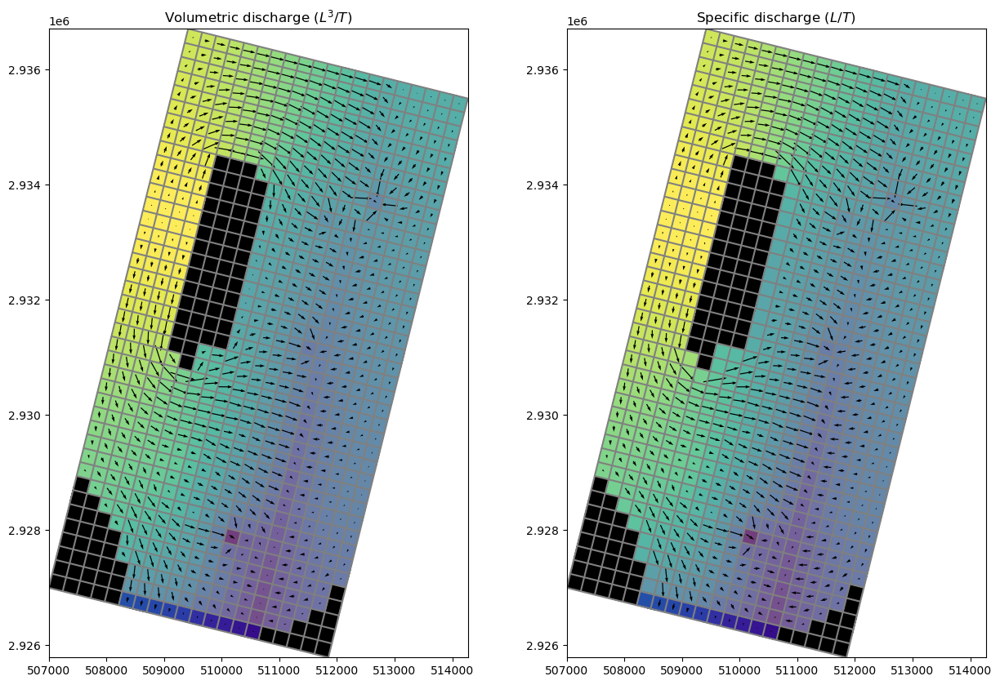
Plotting MODPATH endpoints and pathlines
PlotMapView has a plot_endpoint() and plot_pathline() method, which takes MODPATH endpoint and pathline data and plots them on the map object. Here we load the endpoint and pathline data and plot them on the head and discharge data previously plotted. Pathlines are shown for all times less than or equal to 200 years. Recharge capture zone data for all of the pumping wells are plotted as circle markers colored by travel time.
[18]:
# load the endpoint data
endfile = os.path.join(modelpth, mp.sim.endpoint_file)
endobj = flopy.utils.EndpointFile(endfile)
ept = endobj.get_alldata()
# load the pathline data
pthfile = os.path.join(modelpth, mpp.sim.pathline_file)
pthobj = flopy.utils.PathlineFile(pthfile)
plines = pthobj.get_alldata()
# plot the data
fig = plt.figure(figsize=(10, 10))
ax = fig.add_subplot(1, 1, 1, aspect="equal")
ax.set_title("plot_array()")
mapview = flopy.plot.PlotMapView(model=ml)
quadmesh = mapview.plot_ibound()
quadmesh = mapview.plot_array(head, alpha=0.5)
quiver = mapview.plot_vector(sqx, sqy)
linecollection = mapview.plot_grid()
for d in ml.wel.stress_period_data[0]:
mapview.plot_endpoint(
ept,
direction="starting",
selection_direction="ending",
selection=(d[0], d[1], d[2]),
zorder=100,
)
# construct maximum travel time to plot (200 years - MODFLOW time unit is seconds)
travel_time_max = 200.0 * 365.25 * 24.0 * 60.0 * 60.0
ctt = "<={}".format(travel_time_max)
# plot the pathlines
mapview.plot_pathline(plines, layer="all", colors="red", travel_time=ctt);
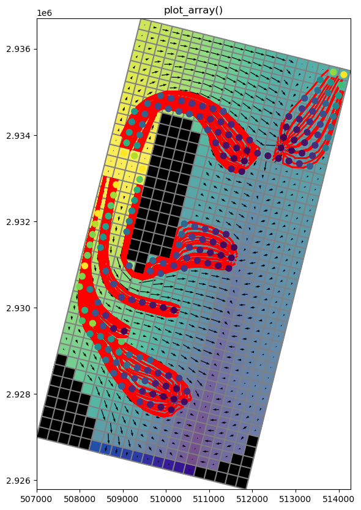
Plotting a Shapefile
PlotMapView has a plot_shapefile() method that can be used to quickly plot a shapefile on your map. In order to use the plot_shapefile() method, you must be able to “import shapefile”. The command import shapefile is part of the pyshp package.
The plot_shapefile() function can plot points, lines, and polygons and will return a patch_collection of objects from the shapefile. For a shapefile of polygons, the plot_shapefile() function will try to plot and fill them all using a different color. For a shapefile of points, you may need to specify a radius, in model units, in order for the circles to show up properly.
The shapefile must have intersecting geographic coordinates as the PlotMapView object in order for it to overlay correctly on the plot. The plot_shapefile() method and function do not use any of the projection information that may be stored with the shapefile. If you reset xoff, yoff, and angrot in the ml.modelgrid.set_coord_info() call below, you will see that the grid will no longer overlay correctly with the shapefile.
[19]:
# Setup the figure and PlotMapView. Show a very faint map of ibound and
# model grid by specifying a transparency alpha value.
fig = plt.figure(figsize=(8, 8))
ax = fig.add_subplot(1, 1, 1, aspect="equal")
# reset the grid rotation and offsets to 0
ml.modelgrid.set_coord_info(xoff=0, yoff=0, angrot=0)
mapview = flopy.plot.PlotMapView(model=ml, ax=ax)
# Plot a shapefile of
shp = os.path.join(loadpth, "gis", "bedrock_outcrop_hole")
patch_collection = mapview.plot_shapefile(
shp, edgecolor="green", linewidths=2, alpha=0.5 # facecolor='none',
)
# Plot a shapefile of a cross-section line
shp = os.path.join(loadpth, "gis", "cross_section")
patch_collection = mapview.plot_shapefile(
shp, radius=0, lw=[3, 1.5], edgecolor=["red", "green"], facecolor="None"
)
# Plot a shapefile of well locations
shp = os.path.join(loadpth, "gis", "wells_locations")
patch_collection = mapview.plot_shapefile(shp, radius=100, facecolor="red")
# Plot the grid and boundary conditions over the top
quadmesh = mapview.plot_ibound(alpha=0.1)
quadmesh = mapview.plot_bc("RIV", alpha=0.1)
linecollection = mapview.plot_grid(alpha=0.1)
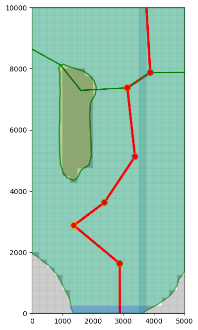
Although the PlotMapView’s plot_shapefile() method does not consider projection information when plotting maps, it can be used to plot shapefiles when a PlotMapView instance is rotated and offset into geographic coordinates. The same shapefiles plotted above (but in geographic coordinates rather than model coordinates) are plotted on the rotated model grid. The offset from model coordinates to geographic coordinates relative to the lower left corner are xoff=-2419.22,
yoff=297.04 and the rotation angle is 14\(^{\circ}\).
[20]:
# Setup the figure and PlotMapView. Show a very faint map of ibound and
# model grid by specifying a transparency alpha value.
# set the modelgrid rotation and offset
ml.modelgrid.set_coord_info(
xoff=-2419.2189559966773, yoff=297.0427372400354, angrot=-14
)
fig = plt.figure(figsize=(8, 8))
ax = fig.add_subplot(1, 1, 1, aspect="equal")
mapview = flopy.plot.PlotMapView(model=ml)
# Plot a shapefile of
shp = os.path.join(loadpth, "gis", "bedrock_outcrop_hole_rotate14")
patch_collection = mapview.plot_shapefile(
shp, edgecolor="green", linewidths=2, alpha=0.5 # facecolor='none',
)
# Plot a shapefile of a cross-section line
shp = os.path.join(loadpth, "gis", "cross_section_rotate14")
patch_collection = mapview.plot_shapefile(shp, lw=3, edgecolor="red")
# Plot a shapefile of well locations
shp = os.path.join(loadpth, "gis", "wells_locations_rotate14")
patch_collection = mapview.plot_shapefile(shp, radius=100, facecolor="red")
# Plot the grid and boundary conditions over the top
quadmesh = mapview.plot_ibound(alpha=0.1)
linecollection = mapview.plot_grid(alpha=0.1);
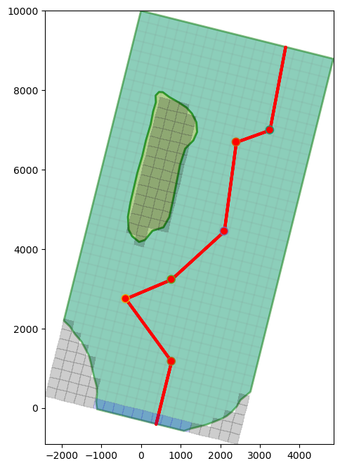
Plotting GIS Shapes
PlotMapView has a plot_shapes() method that can be used to quickly plot GIS based shapes on your map. In order to use the plot_shapes() method, you must be able to “import shapefile”. The command import shapefile is part of the pyshp package.
The plot_shapes() function can plot points, lines, polygons, and multipolygons and will return a patch_collection. For a list or collection of polygons, the plot_shapes() function will try to plot and fill them all using a different color. For a list or collection of points, you may need to specify a radius, in model units, in order for the circles to show up properly.
Note: The supplied shapes must have intersecting geographic coordinates as the PlotMapView object in order for it to overlay correctly on the plot.
plot_shapes() supports many GIS based input types and they are listed below: + list of shapefile.Shape objects + shapefile.Shapes object + list of flopy.utils.geometry objects + flopy.utils.geometry.Collection object + list of geojson geometry objects + list of geojson.Feature objects + geojson.GeometryCollection object + geojson.FeatureCollection object + list of shapely geometry objects + shapely.GeometryCollection object
Here is a basic example of how to use the method:
[21]:
# lets extract some shapes from our shapefiles
shp = os.path.join(loadpth, "gis", "bedrock_outcrop_hole_rotate14")
with shapefile.Reader(shp) as r:
polygon_w_hole = [
r.shape(0),
]
shp = os.path.join(loadpth, "gis", "cross_section_rotate14")
with shapefile.Reader(shp) as r:
cross_section = r.shapes()
# Plot a shapefile of well locations
shp = os.path.join(loadpth, "gis", "wells_locations_rotate14")
with shapefile.Reader(shp) as r:
wells = r.shapes()
Now that the shapes are extracted from the shapefiles, they can be plotted using plot_shapes()
[22]:
# set the modelgrid rotation and offset
ml.modelgrid.set_coord_info(
xoff=-2419.2189559966773, yoff=297.0427372400354, angrot=-14
)
fig = plt.figure(figsize=(8, 8))
ax = fig.add_subplot(1, 1, 1, aspect="equal")
mapview = flopy.plot.PlotMapView(model=ml)
# Plot the grid and boundary conditions
quadmesh = mapview.plot_ibound()
linecollection = mapview.plot_grid()
# plot polygon(s)
patch_collection0 = mapview.plot_shapes(
polygon_w_hole, edgecolor="orange", linewidths=2, alpha=0.5
)
# plot_line(s)
patch_collection1 = mapview.plot_shapes(cross_section, lw=3, edgecolor="red")
# plot_point(s)
patch_collection3 = mapview.plot_shapes(
wells, radius=100, facecolor="k", edgecolor="k"
);
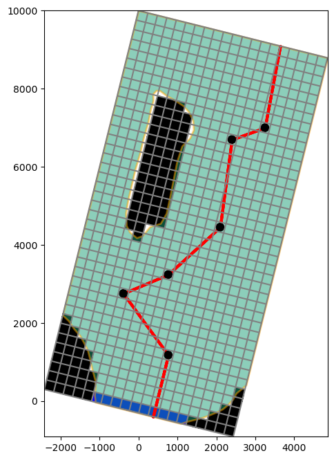
Working with MODFLOW-6 models
PlotMapView has support for MODFLOW-6 models and operates in the same fashion for Structured Grids, Vertex Grids, and Unstructured Grids. Here is a short example on how to plot with MODFLOW-6 structured grids using a version of the Freyberg model created for MODFLOW-6
[23]:
# load the Freyberg model into mf6-flopy and run the simulation
sim_name = "mfsim.nam"
sim_path = str(prj_root / "examples" / "data" / "mf6-freyberg")
sim = flopy.mf6.MFSimulation.load(
sim_name=sim_name, version=vmf6, exe_name=exe_name_mf6, sim_ws=sim_path
)
newpth = os.path.join(modelpth)
sim.set_sim_path(newpth)
sim.write_simulation()
success, buff = sim.run_simulation()
if not success:
print("Something bad happened.")
files = ["freyberg.hds", "freyberg.cbc"]
for f in files:
if os.path.isfile(os.path.join(modelpth, f)):
msg = "Output file located: {}".format(f)
print(msg)
else:
errmsg = "Error. Output file cannot be found: {}".format(f)
print(errmsg)
loading simulation...
loading simulation name file...
loading tdis package...
loading model gwf6...
loading package dis...
loading package ic...
WARNING: Block "options" is not a valid block name for file type ic.
loading package oc...
loading package npf...
loading package sto...
loading package chd...
loading package riv...
loading package wel...
loading package rch...
loading solution package freyberg...
writing simulation...
writing simulation name file...
writing simulation tdis package...
writing solution package freyberg...
writing model freyberg...
writing model name file...
writing package dis...
writing package ic...
writing package oc...
writing package npf...
writing package sto...
writing package chd_0...
writing package riv_0...
writing package wel_0...
writing package rch_0...
FloPy is using the following executable to run the model: ../../home/runner/.local/bin/modflow/mf6
MODFLOW 6
U.S. GEOLOGICAL SURVEY MODULAR HYDROLOGIC MODEL
VERSION 6.4.1 Release 12/09/2022
MODFLOW 6 compiled Apr 12 2023 19:02:29 with Intel(R) Fortran Intel(R) 64
Compiler Classic for applications running on Intel(R) 64, Version 2021.7.0
Build 20220726_000000
This software has been approved for release by the U.S. Geological
Survey (USGS). Although the software has been subjected to rigorous
review, the USGS reserves the right to update the software as needed
pursuant to further analysis and review. No warranty, expressed or
implied, is made by the USGS or the U.S. Government as to the
functionality of the software and related material nor shall the
fact of release constitute any such warranty. Furthermore, the
software is released on condition that neither the USGS nor the U.S.
Government shall be held liable for any damages resulting from its
authorized or unauthorized use. Also refer to the USGS Water
Resources Software User Rights Notice for complete use, copyright,
and distribution information.
Run start date and time (yyyy/mm/dd hh:mm:ss): 2023/05/04 15:54:00
Writing simulation list file: mfsim.lst
Using Simulation name file: mfsim.nam
Solving: Stress period: 1 Time step: 1
Run end date and time (yyyy/mm/dd hh:mm:ss): 2023/05/04 15:54:00
Elapsed run time: 0.067 Seconds
Normal termination of simulation.
Output file located: freyberg.hds
Output file located: freyberg.cbc
Plotting boundary conditions and arrays
This works the same as modflow-2005, however the simulation object can host a number of modflow-6 models so we need to grab a model before attempting to plot with PlotMapView
[24]:
# get the modflow-6 model we want to plot
ml6 = sim.get_model("freyberg")
ml6.modelgrid.set_coord_info(angrot=-14)
fig = plt.figure(figsize=(15, 10))
# plot boundary conditions
ax = fig.add_subplot(1, 2, 1, aspect="equal")
mapview = flopy.plot.PlotMapView(model=ml6)
quadmesh = mapview.plot_ibound()
quadmesh = mapview.plot_bc("RIV")
quadmesh = mapview.plot_bc("WEL")
linecollection = mapview.plot_grid()
ax.set_title("Plot boundary conditions")
# plot model bottom elevations
a = ml6.dis.botm.array
ax = fig.add_subplot(1, 2, 2, aspect="equal")
ax.set_title("Model Bottom Elevations")
mapview = flopy.plot.PlotMapView(model=ml6, layer=0)
quadmesh = mapview.plot_array(a)
inactive = mapview.plot_inactive()
linecollection = mapview.plot_grid()
cb = plt.colorbar(quadmesh, shrink=0.5, ax=ax)
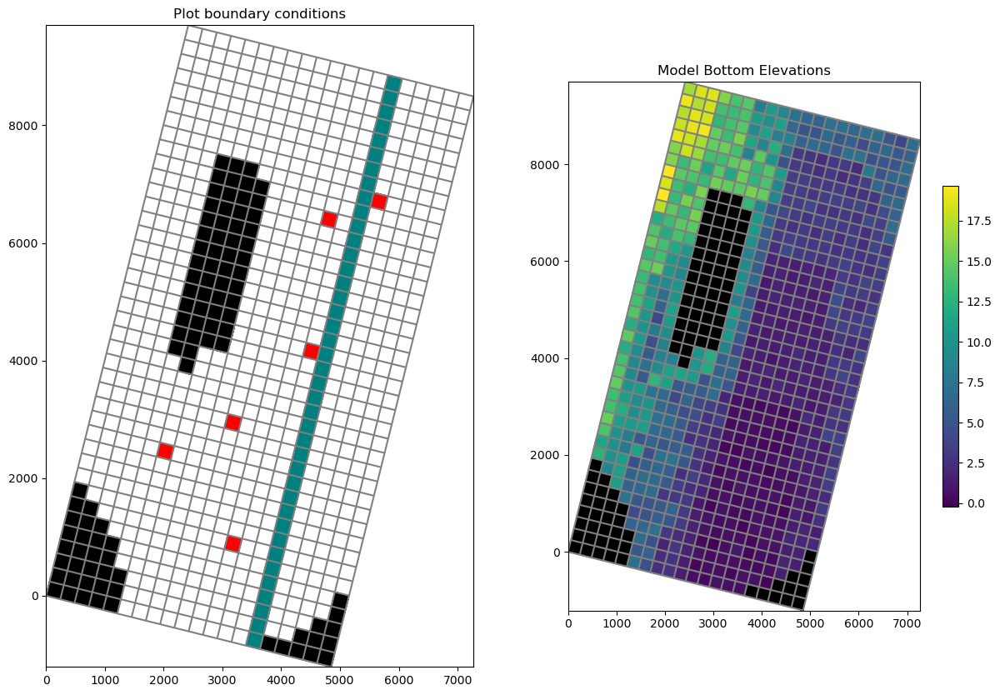
Contouring Arrays
Contouring arrays follows the same code signature for MODFLOW-6 as the MODFLOW-2005 example. Just use the contour_array() method
[25]:
# The contour_array() method will take any keywords
# that can be used by the matplotlib.pyplot.contour
# function. So we can pass in levels, for example.
a = ml6.dis.botm.array
levels = np.arange(0, 20, 0.5)
fig = plt.figure(figsize=(8, 8))
ax = fig.add_subplot(1, 1, 1, aspect="equal")
ax.set_title("Model Bottom Elevations")
mapview = flopy.plot.PlotMapView(model=ml6, layer=0)
contour_set = mapview.contour_array(a, levels=levels)
linecollection = mapview.plot_grid()
# set up and plot a continuous colorbar in matplotlib for a contour plot
norm = mpl.colors.Normalize(
vmin=contour_set.cvalues.min(), vmax=contour_set.cvalues.max()
)
sm = plt.cm.ScalarMappable(norm=norm, cmap=contour_set.cmap)
sm.set_array([])
fig.colorbar(sm, shrink=0.75, ax=ax);
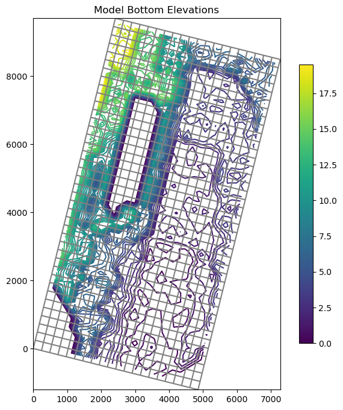
Plotting specific discharge with a MODFLOW-6 model
MODFLOW-6 includes a the PLOT_SPECIFIC_DISCHARGE flag in the NPF package to calculate and store discharge vectors for easy plotting. The postprocessing module will translate the specific dischage into vector array and PlotMapView has the plot_vector() method to use this data. The specific discharge array is stored in the cell budget file.
[26]:
# get the specific discharge from the cell budget file
cbc_file = os.path.join(newpth, "freyberg.cbc")
cbc = flopy.utils.CellBudgetFile(cbc_file)
spdis = cbc.get_data(text="SPDIS")[0]
qx, qy, qz = flopy.utils.postprocessing.get_specific_discharge(spdis, ml6)
# get the head from the head file
head_file = os.path.join(newpth, "freyberg.hds")
head = flopy.utils.HeadFile(head_file)
hdata = head.get_alldata()[0]
# plot specific discharge using PlotMapView
fig = plt.figure(figsize=(8, 8))
mapview = flopy.plot.PlotMapView(model=ml6, layer=0)
linecollection = mapview.plot_grid()
quadmesh = mapview.plot_array(a=hdata, alpha=0.5)
quiver = mapview.plot_vector(qx, qy)
inactive = mapview.plot_inactive()
plt.title("Specific Discharge (" + r"$L/T$" + ")")
plt.colorbar(quadmesh, shrink=0.75);
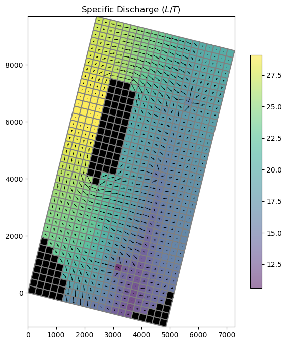
Vertex model plotting with MODFLOW-6
FloPy fully supports vertex discretization (DISV) plotting through the PlotMapView class. The method calls are identical to the ones presented previously for Structured discretization (DIS) and the same matplotlib keyword arguments are supported. Let’s run through an example using a vertex model grid.
[27]:
# build and run vertex model grid demo problem
notebook_utils.run(modelpth)
# check if model ran properly
modelpth = os.path.join(modelpth, "mp7_ex2", "mf6")
files = ["mp7p2.hds", "mp7p2.cbb"]
for f in files:
if os.path.isfile(os.path.join(modelpth, f)):
msg = "Output file located: {}".format(f)
print(msg)
else:
errmsg = "Error. Output file cannot be found: {}".format(f)
print(errmsg)
WARNING: Unable to resolve dimension of ('gwf6', 'disv', 'cell2d', 'cell2d', 'icvert') based on shape "ncvert".
writing simulation...
writing simulation name file...
writing simulation tdis package...
writing solution package ims...
writing model mp7p2...
writing model name file...
writing package disv...
writing package ic...
writing package npf...
writing package wel_0...
INFORMATION: maxbound in ('gwf6', 'wel', 'dimensions') changed to 1 based on size of stress_period_data
writing package rcha_0...
writing package riv_0...
INFORMATION: maxbound in ('gwf6', 'riv', 'dimensions') changed to 21 based on size of stress_period_data
writing package oc...
MODFLOW 6
U.S. GEOLOGICAL SURVEY MODULAR HYDROLOGIC MODEL
VERSION 6.4.1 Release 12/09/2022
MODFLOW 6 compiled Apr 12 2023 19:02:29 with Intel(R) Fortran Intel(R) 64
Compiler Classic for applications running on Intel(R) 64, Version 2021.7.0
Build 20220726_000000
This software has been approved for release by the U.S. Geological
Survey (USGS). Although the software has been subjected to rigorous
review, the USGS reserves the right to update the software as needed
pursuant to further analysis and review. No warranty, expressed or
implied, is made by the USGS or the U.S. Government as to the
functionality of the software and related material nor shall the
fact of release constitute any such warranty. Furthermore, the
software is released on condition that neither the USGS nor the U.S.
Government shall be held liable for any damages resulting from its
authorized or unauthorized use. Also refer to the USGS Water
Resources Software User Rights Notice for complete use, copyright,
and distribution information.
Run start date and time (yyyy/mm/dd hh:mm:ss): 2023/05/04 15:54:02
Writing simulation list file: mfsim.lst
Using Simulation name file: mfsim.nam
Solving: Stress period: 1 Time step: 1
Run end date and time (yyyy/mm/dd hh:mm:ss): 2023/05/04 15:54:02
Elapsed run time: 0.135 Seconds
WARNING REPORT:
1. NONLINEAR BLOCK VARIABLE 'OUTER_HCLOSE' IN FILE 'mp7p2.ims' WAS
DEPRECATED IN VERSION 6.1.1. SETTING OUTER_DVCLOSE TO OUTER_HCLOSE VALUE.
2. LINEAR BLOCK VARIABLE 'INNER_HCLOSE' IN FILE 'mp7p2.ims' WAS DEPRECATED
IN VERSION 6.1.1. SETTING INNER_DVCLOSE TO INNER_HCLOSE VALUE.
Normal termination of simulation.
MODPATH Version 7.2.001
Program compiled Apr 12 2023 19:05:18 with IFORT compiler (ver. 20.21.7)
Run particle tracking simulation ...
Processing Time Step 1 Period 1. Time = 1.00000E+03 Steady-state flow
Particle Summary:
0 particles are pending release.
0 particles remain active.
16 particles terminated at boundary faces.
0 particles terminated at weak sink cells.
0 particles terminated at weak source cells.
0 particles terminated at strong source/sink cells.
0 particles terminated in cells with a specified zone number.
0 particles were stranded in inactive or dry cells.
0 particles were unreleased.
0 particles have an unknown status.
Normal termination.
MODPATH Version 7.2.001
Program compiled Apr 12 2023 19:05:18 with IFORT compiler (ver. 20.21.7)
Run particle tracking simulation ...
Processing Time Step 1 Period 1. Time = 1.00000E+03 Steady-state flow
Particle Summary:
0 particles are pending release.
0 particles remain active.
416 particles terminated at boundary faces.
0 particles terminated at weak sink cells.
0 particles terminated at weak source cells.
0 particles terminated at strong source/sink cells.
0 particles terminated in cells with a specified zone number.
0 particles were stranded in inactive or dry cells.
0 particles were unreleased.
0 particles have an unknown status.
Normal termination.
Output file located: mp7p2.hds
Output file located: mp7p2.cbb
[28]:
# load the simulation and get the model
vertex_sim_name = "mfsim.nam"
vertex_sim = flopy.mf6.MFSimulation.load(
sim_name=vertex_sim_name,
version=vmf6,
exe_name=exe_name_mf6,
sim_ws=modelpth,
)
vertex_ml6 = vertex_sim.get_model("mp7p2")
loading simulation...
loading simulation name file...
loading tdis package...
loading model gwf6...
loading package disv...
WARNING: Unable to resolve dimension of ('gwf6', 'disv', 'cell2d', 'cell2d', 'icvert') based on shape "ncvert".
loading package ic...
loading package npf...
loading package wel...
loading package rch...
loading package riv...
loading package oc...
loading solution package mp7p2...
Setting MODFLOW-6 Vertex Model Grid offsets, rotation and plotting
Setting the Grid offsets and rotation is consistent in FloPy, no matter which type of discretization the user is using. The set_coord_info() method on the modelgrid is used.
Plotting works consistently too, the user just calls the PlotMapView class and it accounts for the discretization type
[29]:
# set coordinate information on the modelgrid
vertex_ml6.modelgrid.set_coord_info(xoff=362100, yoff=4718900, angrot=-21)
fig = plt.figure(figsize=(12, 12))
ax = fig.add_subplot(1, 1, 1, aspect="equal")
ax.set_title("Vertex Model Grid (DISV)")
# use PlotMapView to plot a DISV (vertex) model
mapview = flopy.plot.PlotMapView(vertex_ml6, layer=0)
linecollection = mapview.plot_grid()
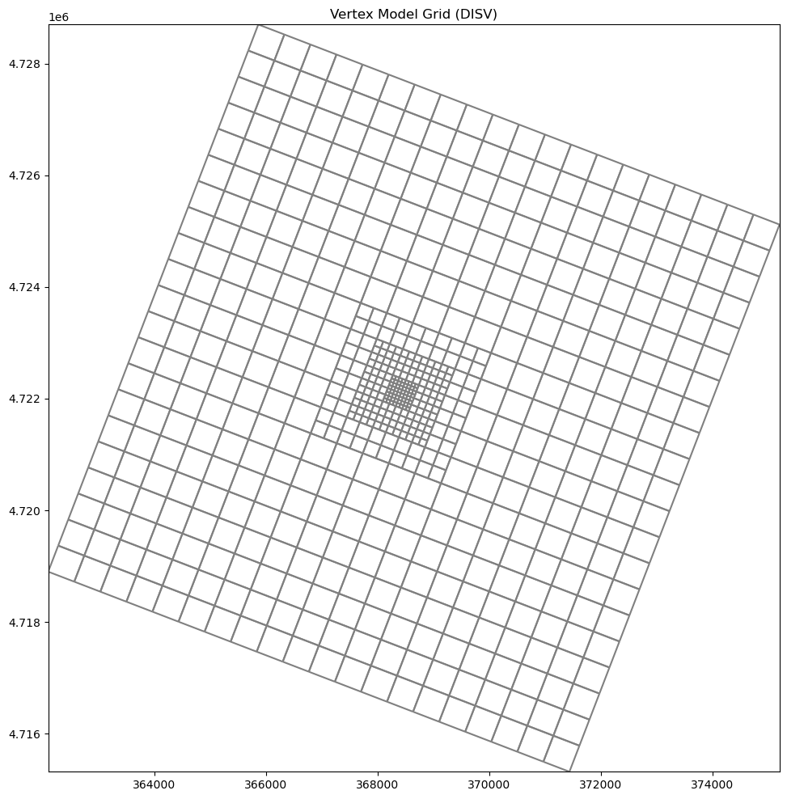
Plotting boundary conditions with Vertex Model grids
The plot_bc() method can be used to plot boundary conditions. It is setup to use the following dictionary to assign colors, however, these colors can be changed in the method call.
bc_color_dict = {'default': 'black', 'WEL': 'red', 'DRN': 'yellow',
'RIV': 'green', 'GHB': 'cyan', 'CHD': 'navy'}
Here we plot river (RIV) cell locations
[30]:
fig = plt.figure(figsize=(12, 12))
ax = fig.add_subplot(1, 1, 1, aspect="equal")
ax.set_title("Vertex Model Grid (DISV)")
# use PlotMapView to plot a DISV (vertex) model
mapview = flopy.plot.PlotMapView(vertex_ml6, layer=0)
riv = mapview.plot_bc("RIV")
linecollection = mapview.plot_grid()
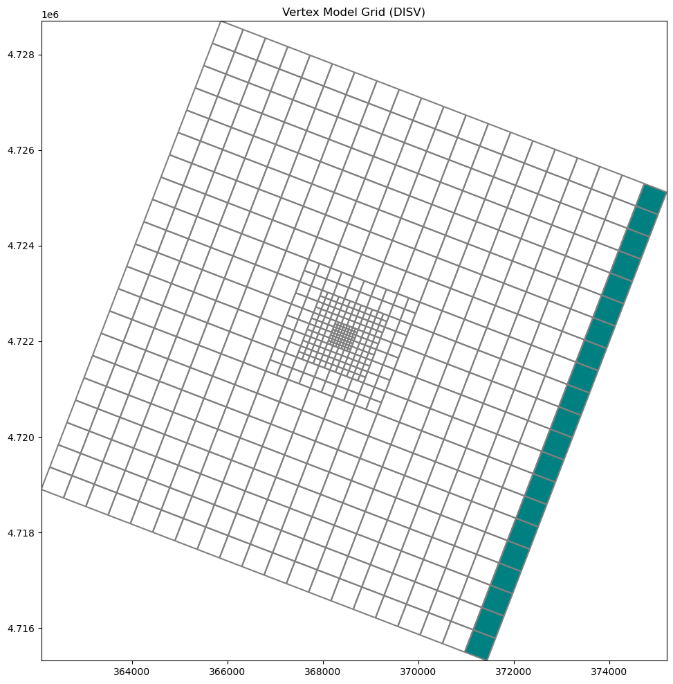
Plotting Arrays and Contouring with Vertex Model grids
PlotMapView allows the user to plot arrays and contour with DISV based discretization. The plot_array() method is called in the same way as using a structured grid. The only difference is that PlotMapView builds a matplotlib patch collection for Vertex based grids.
[31]:
# get the head output for stress period 1 from the modflow6 head file
head = flopy.utils.HeadFile(os.path.join(modelpth, "mp7p2.hds"))
hdata = head.get_alldata()[0, :, :, :]
fig = plt.figure(figsize=(12, 12))
ax = fig.add_subplot(1, 1, 1, aspect="equal")
ax.set_title("plot_array()")
mapview = flopy.plot.PlotMapView(model=vertex_ml6, layer=2)
patch_collection = mapview.plot_array(hdata, cmap="Dark2")
linecollection = mapview.plot_grid(lw=0.25, color="k")
cb = plt.colorbar(patch_collection, shrink=0.75)
The contour_array() method operates in the same way as the sturctured example.
[32]:
# plotting head array and then contouring the array!
levels = np.arange(327, 332, 0.5)
fig = plt.figure(figsize=(12, 12))
ax = fig.add_subplot(1, 1, 1, aspect="equal")
ax.set_title("Model head contours, layer 3")
mapview = flopy.plot.PlotMapView(model=vertex_ml6, layer=2)
pc = mapview.plot_array(hdata, cmap="Dark2")
# contouring the head array
contour_set = mapview.contour_array(hdata, levels=levels, colors="white")
plt.clabel(contour_set, fmt="%.1f", colors="white", fontsize=11)
linecollection = mapview.plot_grid(lw=0.25, color="k")
cb = plt.colorbar(pc, shrink=0.75, ax=ax)
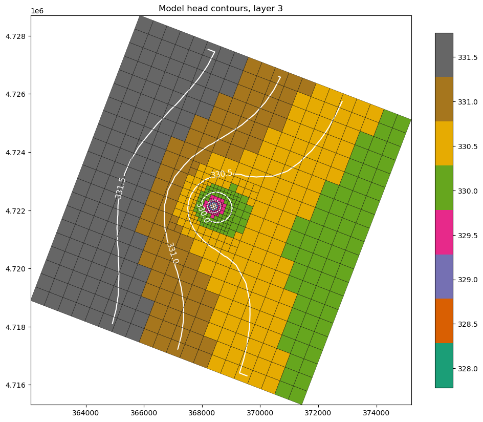
Plotting MODPATH 7 results on a vertex model
MODPATH-7 results can be plotted using the same built in methods as used previously to plot MODPATH-6 results. The plot_pathline() and plot_timeseries() methods are layered on the previous example to show modpath simulation results
[33]:
# load the MODPATH-7 results
mp_namea = "mp7p2a_mp"
fpth = os.path.join(modelpth, mp_namea + ".mppth")
p = flopy.utils.PathlineFile(fpth)
p0 = p.get_alldata()
fpth = os.path.join(modelpth, mp_namea + ".timeseries")
ts = flopy.utils.TimeseriesFile(fpth)
ts0 = ts.get_alldata()
[34]:
# setup the plot
fig = plt.figure(figsize=(12, 12))
ax = fig.add_subplot(1, 1, 1, aspect="equal")
ax.set_title("MODPATH 7 particle tracking results")
mapview = flopy.plot.PlotMapView(vertex_ml6, layer=2)
# plot and contour head arrays
pc = mapview.plot_array(hdata, cmap="Dark2")
contour_set = mapview.contour_array(hdata, levels=levels, colors="white")
plt.clabel(contour_set, fmt="%.1f", colors="white", fontsize=11)
linecollection = mapview.plot_grid(lw=0.25, color="k")
cb = plt.colorbar(pc, shrink=0.75, ax=ax)
# plot the modpath results
pline = mapview.plot_pathline(p0, layer="all", color="blue", lw=0.75)
colors = ["green", "orange", "red"]
for k in range(3):
tseries = mapview.plot_timeseries(
ts0, layer=k, marker="o", lw=0, color=colors[k]
)
Plotting specific discharge vectors for DISV
MODFLOW-6 includes a the PLOT_SPECIFIC_DISCHARGE flag in the NPF package to calculate and store discharge vectors for easy plotting. The postprocessing module will translate the specific dischage into vector array and PlotMapView has the plot_vector() method to use this data. The specific discharge array is stored in the cell budget file.
[35]:
cbb = flopy.utils.CellBudgetFile(
os.path.join(modelpth, "mp7p2.cbb"), precision="double"
)
spdis = cbb.get_data(text="SPDIS")[0]
qx, qy, qz = flopy.utils.postprocessing.get_specific_discharge(
spdis, vertex_ml6
)
fig = plt.figure(figsize=(12, 12))
ax = fig.add_subplot(1, 1, 1, aspect="equal")
ax.set_title("Specific discharge for vertex model")
mapview = flopy.plot.PlotMapView(vertex_ml6, layer=2)
pc = mapview.plot_array(hdata, cmap="Dark2")
linecollection = mapview.plot_grid(lw=0.25, color="k")
cb = plt.colorbar(pc, shrink=0.75, ax=ax)
# plot specific discharge
quiver = mapview.plot_vector(qx, qy, normalize=True, alpha=0.60)
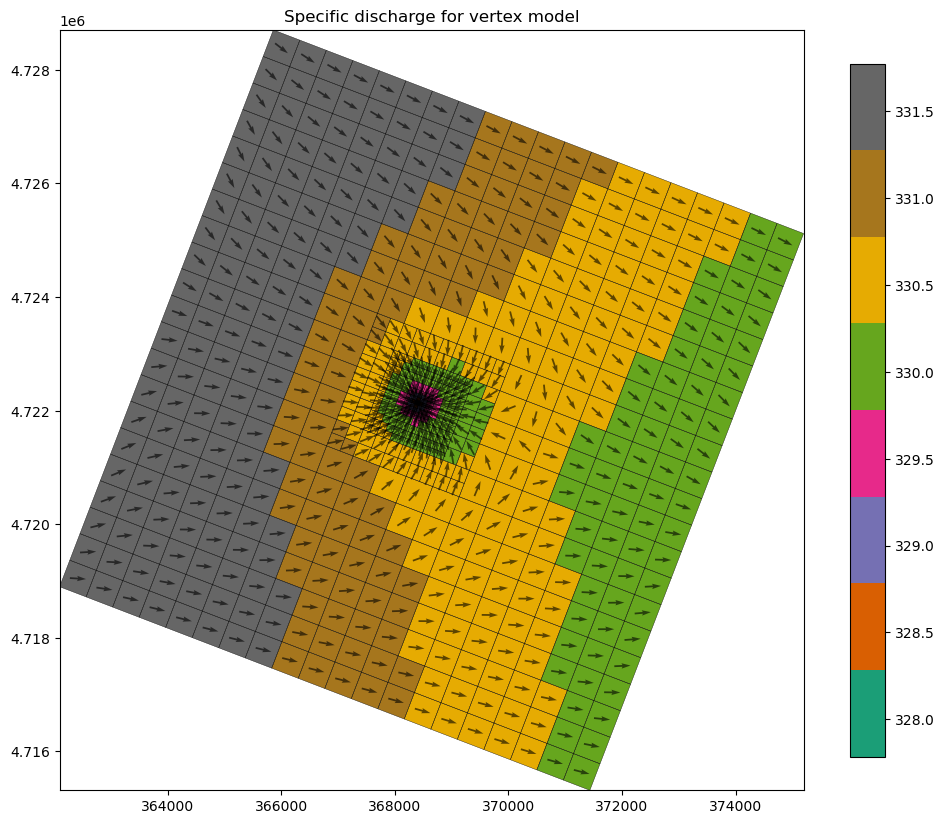
Unstructured grid (DISU) plotting with MODFLOW-USG and MODFLOW-6
Unstructured grid (DISU) plotting has support through the PlotMapView class and the UnstructuredGrid discretization object. The method calls are identical to those used for vertex (DISV) and structured (DIS) model grids. Let’s run through a few unstructured grid examples
[36]:
# set up the notebook for unstructured grid plotting
from flopy.discretization import UnstructuredGrid
# this is a folder containing some unstructured grids
datapth = str(prj_root / "examples" / "data" / "unstructured")
# simple functions to load vertices and incidence lists
def load_verts(fname):
verts = np.genfromtxt(
fname, dtype=[int, float, float], names=["iv", "x", "y"]
)
verts["iv"] -= 1 # zero based
return verts
def load_iverts(fname):
f = open(fname, "r")
iverts = []
xc = []
yc = []
for line in f:
ll = line.strip().split()
iverts.append([int(i) - 1 for i in ll[4:]])
xc.append(float(ll[1]))
yc.append(float(ll[2]))
return iverts, np.array(xc), np.array(yc)
[37]:
# load vertices
fname = os.path.join(datapth, "ugrid_verts.dat")
verts = load_verts(fname)
# load the incidence list into iverts
fname = os.path.join(datapth, "ugrid_iverts.dat")
iverts, xc, yc = load_iverts(fname)
In this case, verts is just a 2-dimensional list of x,y vertex pairs. iverts is also a 2-dimensional list, where the outer list is of size ncells, and the inner list is a list of the vertex numbers that comprise the cell.
[38]:
# Print the first 5 entries in verts and iverts
for ivert, v in enumerate(verts[:5]):
print("Vertex coordinate pair for vertex {}: {}".format(ivert, v))
print("...\n")
for icell, vertlist in enumerate(iverts[:5]):
print("List of vertices for cell {}: {}".format(icell, vertlist))
Vertex coordinate pair for vertex 0: (0, 0., 700.)
Vertex coordinate pair for vertex 1: (1, 100., 700.)
Vertex coordinate pair for vertex 2: (2, 100., 600.)
Vertex coordinate pair for vertex 3: (3, 0., 600.)
Vertex coordinate pair for vertex 4: (4, 200., 700.)
...
List of vertices for cell 0: [0, 1, 2, 3, 0]
List of vertices for cell 1: [1, 4, 5, 2, 1]
List of vertices for cell 2: [4, 6, 7, 5, 4]
List of vertices for cell 3: [6, 8, 9, 7, 6]
List of vertices for cell 4: [8, 10, 11, 9, 8]
A flopy UnstructuredGrid object can now be created using the vertices and incidence list. The UnstructuredGrid object is a key part of the plotting capabilities in flopy. In addition to the vertex information, the UnstructuredGrid object also needs to know how many cells are in each layer. This is specified in the ncpl variable, which is a list of cells per layer.
[39]:
ncpl = np.array(5 * [len(iverts)])
umg = UnstructuredGrid(verts, iverts, xc, yc, ncpl=ncpl, angrot=10)
print(ncpl)
print(umg)
[218 218 218 218 218]
xll:0.0; yll:0.0; rotation:10; units:undefined; lenuni:0
Now that we have an UnstructuredGrid, we can use the flopy PlotMapView object to create different types of plots, just like we do for structured grids.
[40]:
f = plt.figure(figsize=(10, 10))
mapview = flopy.plot.PlotMapView(modelgrid=umg)
mapview.plot_grid()
plt.plot(umg.xcellcenters, umg.ycellcenters, "bo");
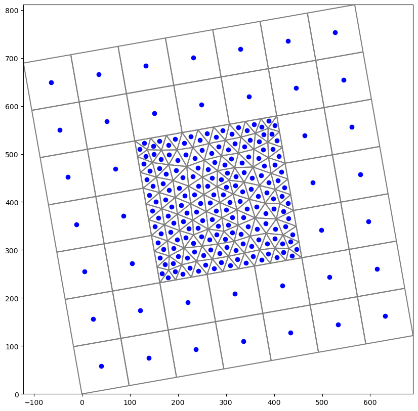
[41]:
# Create a random array for layer 0, and then plot it with a color flood and contours
f = plt.figure(figsize=(10, 10))
a = np.random.random((ncpl[0])) * 100
levels = np.arange(0, 100, 30)
mapview = flopy.plot.PlotMapView(modelgrid=umg)
pc = mapview.plot_array(a, cmap="viridis")
contour_set = mapview.contour_array(a, levels=levels, colors="white")
plt.clabel(contour_set, fmt="%.1f", colors="white", fontsize=11)
linecollection = mapview.plot_grid(color="k", lw=0.5)
colorbar = plt.colorbar(pc, shrink=0.75)
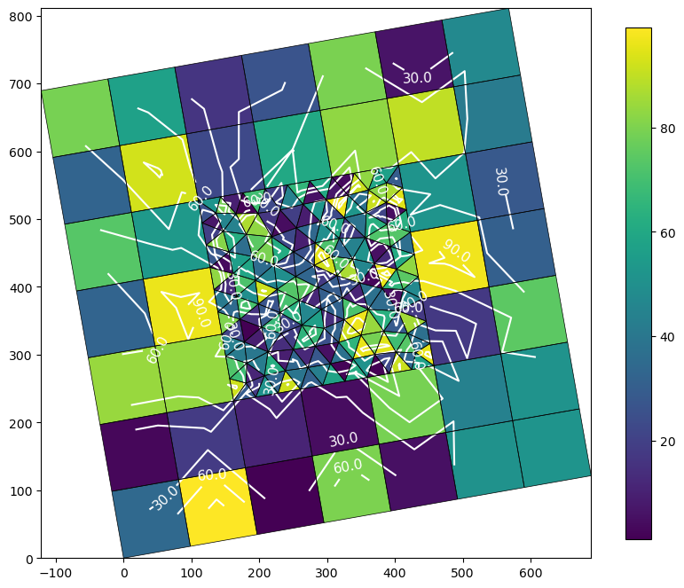
Here are some examples of some other types of grids. The data files for these grids are located in the datapth folder.
[42]:
from pathlib import Path
fig = plt.figure(figsize=(10, 30))
fnames = [fname for fname in os.listdir(datapth) if fname.endswith(".exp")]
nplot = len(fnames)
for i, f in enumerate(fnames):
ax = fig.add_subplot(nplot, 1, i + 1, aspect="equal")
fname = os.path.join(datapth, f)
umga = UnstructuredGrid.from_argus_export(fname, nlay=1)
mapview = flopy.plot.PlotMapView(modelgrid=umga, ax=ax)
linecollection = mapview.plot_grid(colors="sienna")
ax.set_title(Path(fname).name)
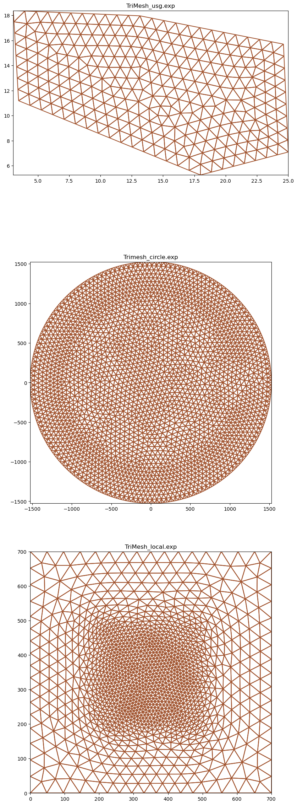
Plotting using built in styles
FloPy’s plotting routines can be used with built in styles from the styles module. The styles module takes advantage of matplotlib’s temporary styling routines by reading in pre-built style sheets. Two different types of styles have been built for flopy: USGSMap() and USGSPlot() styles which can be used to create report quality figures. The styles module also contains a number of methods that can be used for adding axis labels, text, annotations, headings, removing tick lines,
and updating the current font.
[43]:
# import flopy's styles
from flopy.plot import styles
[44]:
# get the specific discharge from the cell budget file
cbc_file = os.path.join(newpth, "freyberg.cbc")
cbc = flopy.utils.CellBudgetFile(cbc_file)
spdis = cbc.get_data(text="SPDIS")[0]
qx, qy, qz = flopy.utils.postprocessing.get_specific_discharge(spdis, ml6)
# get the head from the head file
head_file = os.path.join(newpth, "freyberg.hds")
head = flopy.utils.HeadFile(head_file)
hdata = head.get_alldata()[0]
# use USGSMap style to create a discharge figure:
with styles.USGSMap():
fig = plt.figure(figsize=(12, 12))
mapview = flopy.plot.PlotMapView(model=ml6, layer=0)
linecollection = mapview.plot_grid()
quadmesh = mapview.plot_array(a=hdata, alpha=0.5)
quiver = mapview.plot_vector(qx, qy)
inactive = mapview.plot_inactive()
plt.colorbar(quadmesh, shrink=0.75)
# use styles to add a heading, xlabel, ylabel
styles.heading(
letter="A.", heading="Specific Discharge (" + r"$L/T$" + ")"
)
styles.xlabel(label="Easting")
styles.ylabel(label="Northing")
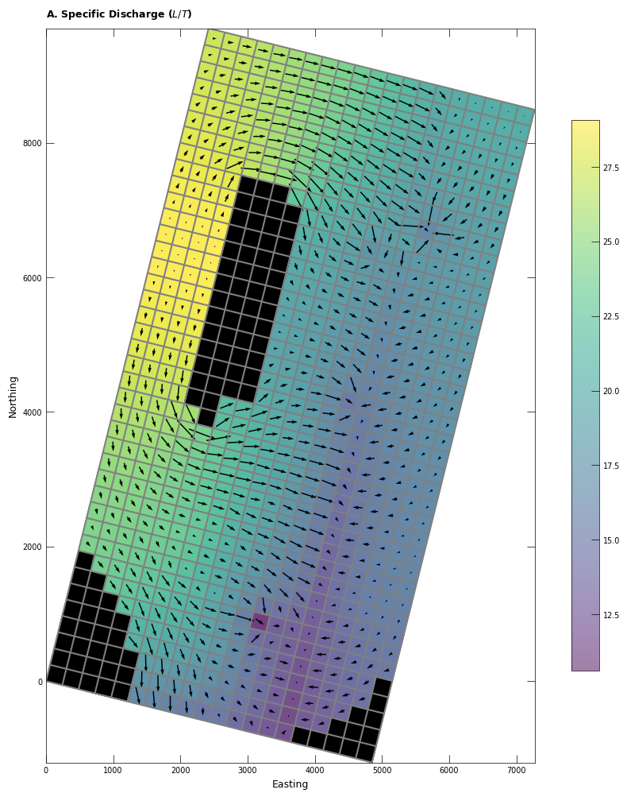
Here is a second example showing how to change the font type using styles
[45]:
# use USGSMap style, change font type, and plot without tick lines:
with styles.USGSMap():
fig = plt.figure(figsize=(12, 12))
mapview = flopy.plot.PlotMapView(model=ml6, layer=0)
linecollection = mapview.plot_grid()
quadmesh = mapview.plot_array(a=hdata, alpha=0.5)
quiver = mapview.plot_vector(qx, qy)
inactive = mapview.plot_inactive()
plt.colorbar(quadmesh, shrink=0.75)
# change the font type to comic sans
styles.set_font_type(family="fantasy", fontname="Comic Sans MS")
# use styles to add a heading, xlabel, ylabel, and remove tick marks
styles.heading(
letter="A.",
heading="Comic Sans: Specific Discharge (" + r"$L/T$" + ")",
fontsize=16,
)
styles.xlabel(label="Easting", fontsize=12)
styles.ylabel(label="Northing", fontsize=12)
styles.remove_edge_ticks()
findfont: Generic family 'fantasy' not found because none of the following families were found: Chicago, Charcoal, Impact, Western, Humor Sans, xkcd, fantasy
findfont: Generic family 'fantasy' not found because none of the following families were found: Chicago, Charcoal, Impact, Western, Humor Sans, xkcd, fantasy
findfont: Generic family 'fantasy' not found because none of the following families were found: Chicago, Charcoal, Impact, Western, Humor Sans, xkcd, fantasy
findfont: Generic family 'fantasy' not found because none of the following families were found: Chicago, Charcoal, Impact, Western, Humor Sans, xkcd, fantasy
findfont: Generic family 'fantasy' not found because none of the following families were found: Chicago, Charcoal, Impact, Western, Humor Sans, xkcd, fantasy
findfont: Generic family 'fantasy' not found because none of the following families were found: Chicago, Charcoal, Impact, Western, Humor Sans, xkcd, fantasy
findfont: Font family ['fantasy'] not found. Falling back to DejaVu Sans.
findfont: Generic family 'fantasy' not found because none of the following families were found: Chicago, Charcoal, Impact, Western, Humor Sans, xkcd, fantasy
findfont: Generic family 'fantasy' not found because none of the following families were found: Chicago, Charcoal, Impact, Western, Humor Sans, xkcd, fantasy
findfont: Generic family 'fantasy' not found because none of the following families were found: Chicago, Charcoal, Impact, Western, Humor Sans, xkcd, fantasy
findfont: Generic family 'fantasy' not found because none of the following families were found: Chicago, Charcoal, Impact, Western, Humor Sans, xkcd, fantasy
findfont: Generic family 'fantasy' not found because none of the following families were found: Chicago, Charcoal, Impact, Western, Humor Sans, xkcd, fantasy
findfont: Generic family 'fantasy' not found because none of the following families were found: Chicago, Charcoal, Impact, Western, Humor Sans, xkcd, fantasy
findfont: Generic family 'fantasy' not found because none of the following families were found: Chicago, Charcoal, Impact, Western, Humor Sans, xkcd, fantasy
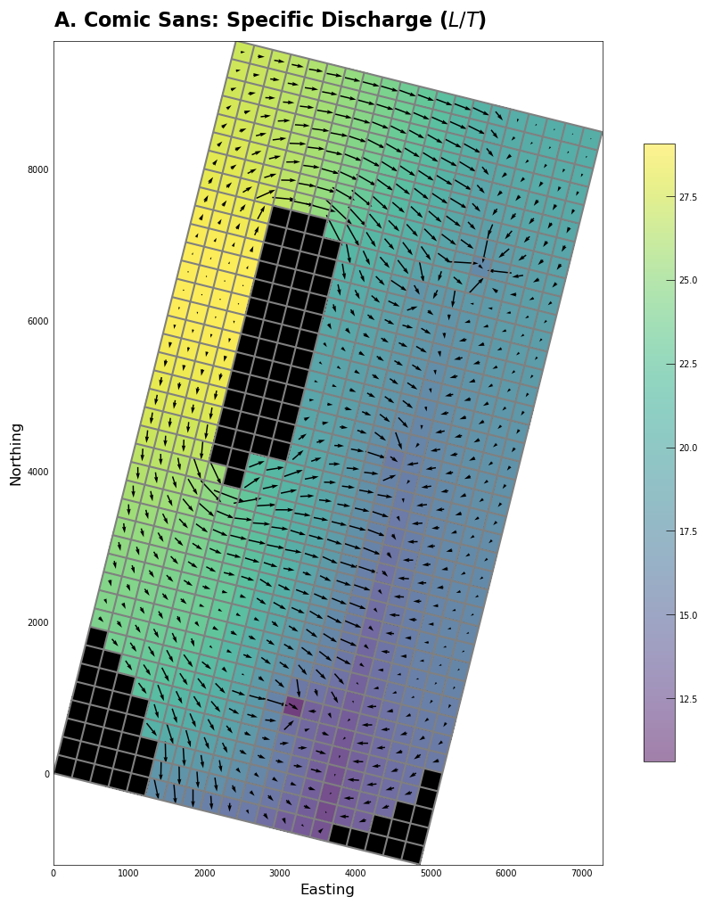
Summary
This notebook demonstrates some of the plotting functionality available with FloPy. Although not described here, the plotting functionality tries to be general by passing keyword arguments passed to PlotMapView methods down into the matplotlib.pyplot routines that do the actual plotting. For those looking to customize these plots, it may be necessary to search for the available keywords by understanding the types of objects that are created by the PlotMapView methods. The
PlotMapView methods return these matplotlib.collections objects so that they could be fine-tuned later in the script before plotting.
Hope this gets you started!
[46]:
try:
# ignore PermissionError on Windows
tempdir.cleanup()
except:
pass
[ ]: